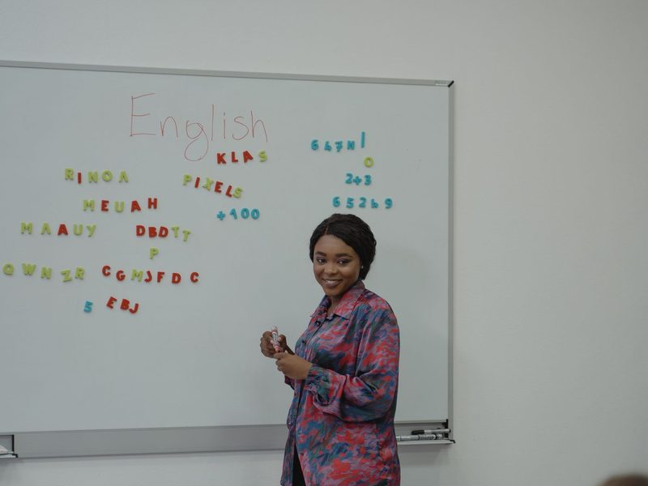

VOCABULARY · 主題 2000 字 UNIT 5
Forms of address．稱謂的形式
稱呼別人時會用到的字，共 7 個。注意 Mr.、Mrs.、Miss、Ms. 的差別，以及稱謂後面要接「姓」。
共 7 個單字．點 🔊 聽發音
1Dr.n.
醫生；博士
doctor 的縮寫
Dr. Lin is a kind doctor.林醫生是一位親切的醫生。
2Mr.n.
先生
mister 的縮寫；用在男士的姓之前
Mr. Wang is our new math teacher.王老師是我們新的數學老師。
3Mrs.n.
太太
用在已婚女士的姓之前
Mrs. Chen cooks dinner for her family.陳太太為家人煮晚餐。
4Missn.
小姐
稱呼未婚女士；後面不加點
Miss White works at a bookstore.懷特小姐在書店工作。

5Ms.n.
女士
不分已婚、未婚，最禮貌
Ms. Huang is my English teacher.黃老師是我的英文老師。
6sirn.
先生；長官
單獨使用，不接姓名
Can I help you, sir?先生，需要幫忙嗎？
7namen.
名字
first name 名；last name 姓
Please write your name on the paper.請把你的名字寫在紙上。
FOCUS
稱謂怎麼用？
| 稱謂 | 用在 | 例子 |
|---|
| Mr. | 男士 | Mr. Wang |
| Mrs. | 已婚女士 | Mrs. Chen |
| Miss | 未婚女士 | Miss White |
| Ms. | 女士（不分婚否） | Ms. Huang |
| Dr. | 醫生；博士 | Dr. Lin |
| sir | 單獨稱呼男士 | Yes, sir. |
稱謂後面接「姓」：Mr. Wang（○）、Mr. David（✕）。不知道對方有沒有結婚時，用 Ms. 最禮貌。sir 單獨使用，不接姓名。
FOCUS
名字怎麼說？
| 英文 | 中文 |
|---|
| first name | 名字（名） |
| last name ／ family name | 姓 |
| full name | 全名 |
| What's your name? | 你叫什麼名字？ |
| My name is Amy Lin. | 我叫林艾美。 |
| Please call me Amy. | 叫我 Amy 就好。 |
英文名字是「名在前、姓在後」：Amy Lin 的 first name 是 Amy，last name 是 Lin。所以林老師是 Mr. Lin 或 Ms. Lin。